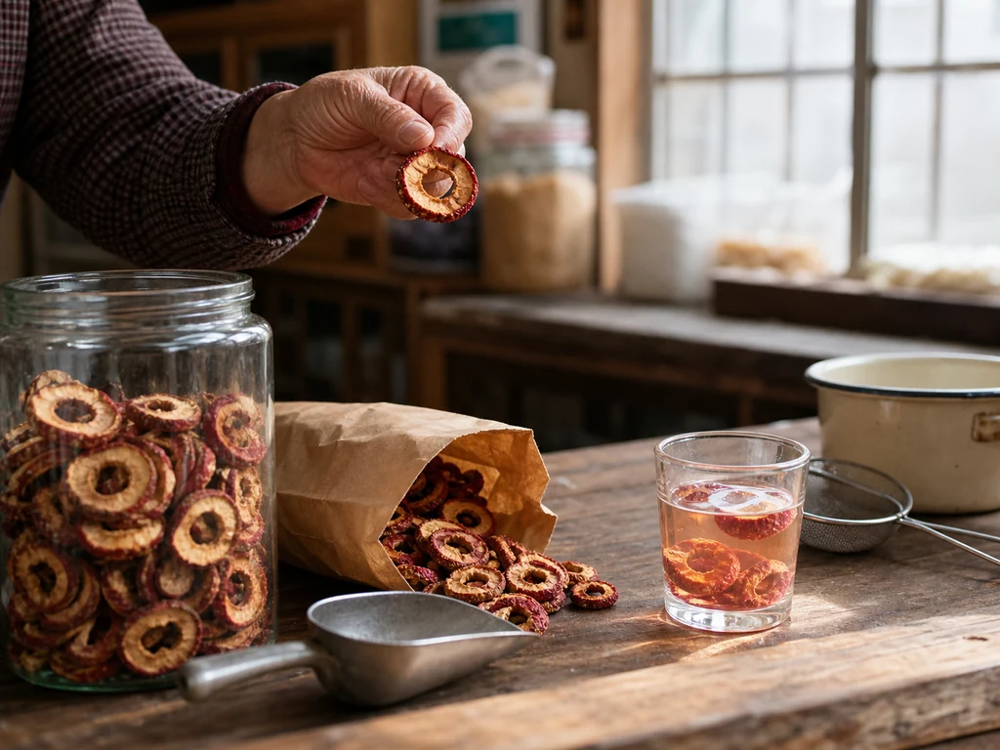

Hawthorn Water at the Dried-Fruit Counter
The woman at the dried-fruit counter held a hawthorn slice to the light, shook the seeds from my paper bag, and folded the top twice before handing it over.

Red rings in the glass jar
The woman who ran the dried-fruit counter stored hawthorn slices in a wide glass jar near the scale. She held one ring toward the window so I could see the pale center, then shook the loose seeds from the scoop before filling my paper bag.
The slices tapped against one another on the walk home. When I opened the fold, their tart smell reached the counter before the kettle did.
The color entering the water
I rinsed the slices in a small strainer and set them in an enamel pot. Their red edges darkened in the water, and the pale centers became soft enough to fold against the spoon.
Sour-plum drink used hawthorn among a crowded packet of dried ingredients. Winter-melon tea began with a dark preserved slab, while chrysanthemum flowers opened at the surface of a cup. Hawthorn water kept the round slices visible from pot to glass.
The last slices in the strainer
I poured the water through the same small strainer used at the sink. A little color remained in the fruit, and one ring clung to the wire until I lifted it with the spoon.
The paper bag was folded closed for another day. I washed the enamel pot before the red line around its inside had dried.